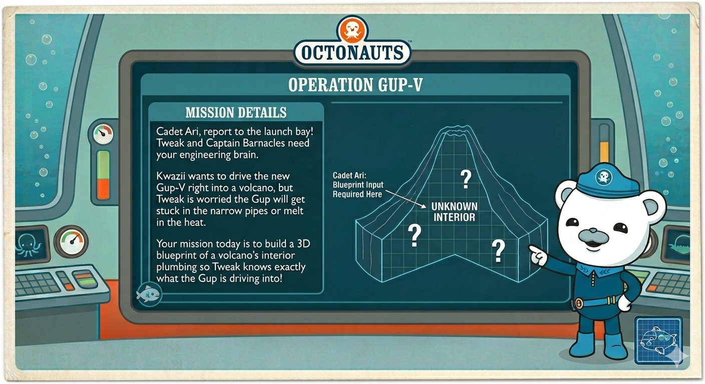
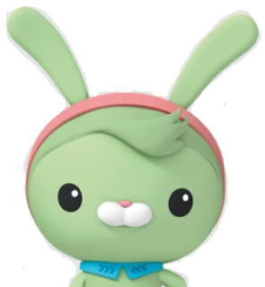
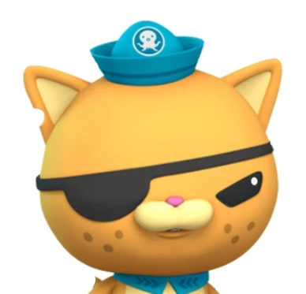
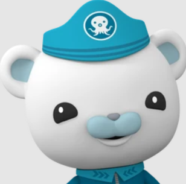
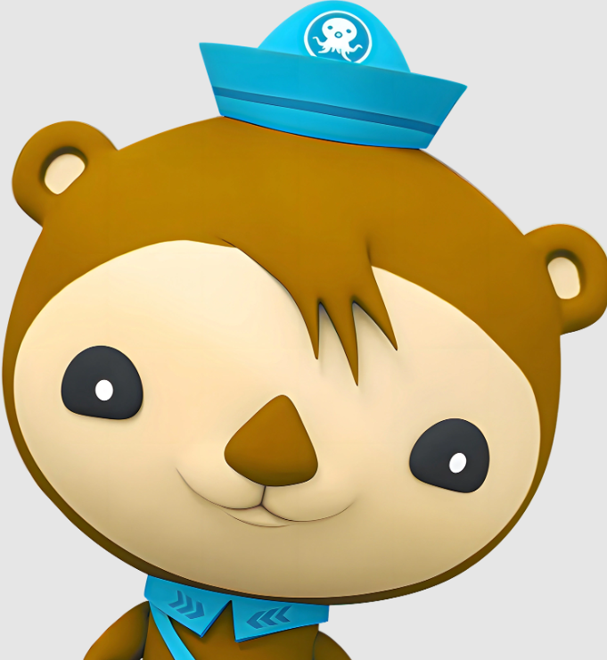
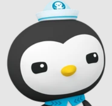

Mission Viewport ミッション・ビューポート
Week 1: Magma Chambers第1週: マグマだまり
Mission Code: Chassis & Plumbing Test | Focus: Interior mechanical structures, magma vs. lava, and pressure.

💡Core Concepts重要コンセプト
Magma Chamber: The underground storage tank where hot, melted rock waits under immense pressure.
Central Vent / Pipe: The main elevator shaft or pipe that the magma climbs up when the pressure gets too high.
Crater / Exit Vent: The exit door at the very top where the magma finally escapes and turns into lava.
マグマだまり: 地下深くにある、ドロドロに溶けた熱い岩（マグマ）がものすごい圧力で待機しているタンクのような場所。
火道 (パイプ): 圧力が高くなった時に、マグマが上に向かって登っていくメインのエレベーターのような通り道。
火口 (出口): マグマが最終的に外に逃げ出し、溶岩（溶岩）に変わる一番上の出口。
Materials必要なもの
The Mission: Playdough Cross-Sectionミッション: 粘土で断面図作り
Step 1 (Magma Chamber): Roll a big red/orange ball and flatten it on a plate.

Step 2 (The Pipe): Roll a long, thick red playdough "snake" standing straight up from the center of the base.
Step 3 (Building the Crust): Use brown/grey playdough to build the mountain structure around the red pipe, leaving the peak open.
Step 4 (The Reveal): Use a plastic butter knife to slice the volcano directly down the middle.
ステップ 1 (マグマだまり): 赤かオレンジの粘土を丸めて、お皿の上で平らに潰します。
ステップ 2 (火道): 赤い粘土で太くて長いヘビを作り、土台の真ん中にまっすぐ立てます。
ステップ 3 (地殻の建設): 茶色やグレーの粘土を使って赤いパイプの周りに山の形を作ります。頂上は開けたままにしてね。
ステップ 4 (断面の確認): プラスチックのナイフを使って、火山を真っ二つに切り裂いて中身を確認します。
👧🏻Mia's Target: Base Camp Builderミアの任務: ベースキャンプ建設
Give Mia her own plate, brown/grey playdough, and red bits. Her job is to build her own "mini-mountain" next to Ari’s lab.
ミア専用のお皿と粘土を渡します。彼女の仕事は、アリの研究所の隣に自分だけの「ミニマウンテン」を作ることです。
📸 Final Picture Report最終写真レポート
The Drawing
Ari will look at his open playdough model and draw the mountain outline with its internal chamber and pipe into his journal.
お絵かき
切った粘土モデルを見て、火山の外形と内側のパイプやマグマだまりをノートに描きます。
The Labeling Targets
ENG: Magma Chamber, Pipe, Volcano
JPN: マグマだまり, 火道, 火山
Supplemental Mediaおすすめの絵本と音声
by Anne Schreiber
by Fukuinkan Shoten
Volcanoes & Tectonic Plates
Audiobook
🔒Captain's Log (Parent's Guide)キャプテンの記録（保護者向け）
Cheat Sheet Q&Aよくある質問と答え▼
Ari: "What is the difference between magma and lava?"
Your Answer: "Location! It is exactly the same stuff. Trapped underground = Magma. The second it touches the outside air = Lava."
アリ：「マグマと溶岩（lava）の違いは何？」
答え方： 「場所が違うだけだよ！中身はまったく同じものなんだ。地下に閉じ込められている時＝マグマ。外の空気に触れた瞬間＝溶岩（Lava）って呼ぶんだよ。」
Ari: "Why does the magma go up instead of down?"
Your Answer: "Heat and gas bubbles. Like a shaken warm soda bottle, the trapped gas forces the liquid upward to escape."
アリ：「どうしてマグマは下じゃなくて上に行くの？」
答え方： 「熱とガスの泡のせいだよ。振った温かい炭酸ジュースみたいに、閉じ込められたガスが逃げようとして液体を上に押し上げるんだ。」
Ari: "Can Tweak just plug the pipe?"
Your Answer: "No! The pressure is too high; it would just punch a new hole in the side of the mountain or blow the mountain apart."
アリ：「トゥイークがパイプにフタをすればいいんじゃない？」
答え方： 「ダメだよ！圧力が強すぎるから、山の横に新しい穴を開けちゃうか、山ごと吹き飛ばしてしまうよ。」
Week 2: Geology in the Wild第2週: 大自然の地質学
Mission Code: Outdoor Extraction | Focus: Igneous rock cooling speeds, pumice vs. basalt.

Captain's Briefingキャプテンの指令
"Yoweee! Cadet Ari, Kwazii here! I hear you're heading into the wild! Shiver me timbers, volcanic rocks are like hidden pirate treasure. Tweak needs to know if they will damage the Gup-V's heavy tires. Scout the campsite and extract 3 distinct types of rocks!"
「ヤーウィー！アリ新隊員、クワジーだ！大自然に向かっているそうだな！火山岩は隠された海賊の宝物みたいなもんだ。トゥイークがガップVのタイヤを傷つけないか知りたがっている。キャンプ地を偵察して、3種類の違う石を発掘してくれ！」
💡Core Concepts重要コンセプト
Igneous Rocks: Any rock created by a volcano.
Cooling Speeds: How the rock looks depends entirely on how fast the lava cooled. If it cooled slowly inside the earth, it forms dense, heavy, dark rocks (Basalt). If it was blasted into the chilly air and cooled instantly, it traps gas bubbles inside, creating a sponge-like rock (Pumice).
火成岩 (Igneous Rocks): 火山から生まれたすべての石のこと。
冷却スピード: 石の見た目は、溶岩がどれだけ早く冷えたかによって完全に決まります。地球の中でゆっくり冷えると、重くて黒い石（玄武岩）になります。冷たい空気に吹き飛ばされて一瞬で冷えると、中にガスの泡が閉じ込められ、スポンジのような石（軽石）になります。
Materials必要なもの
The Mission: Campsite Rock Huntミッション: キャンプ場で石探し
Step 1 (Extraction): While camping, Ari's single focus is to track down and extract 3 distinct types of rocks.
Step 2 (Identification): Look out for highly porous stones (pumice with frozen gas bubbles), dark, heavy volcanic basalt fragments, or smooth river stones.
ステップ 1 (発掘): キャンプ中、アリは3種類のまったく違う形の石を探し出して採取します。
ステップ 2 (分析): 穴がたくさん空いた石（ガスの泡が凍った軽石）、暗くて重い火山の石（玄武岩）、またはツルツルした川の石を見つけてみよう。
👧🏻Mia's Target: Payload Specialistミアの任務: 発掘スペシャリスト
Mia gets a bucket. Her job is to collect any rocks she finds and sort them by size or color next to Ari's inspection station.
ミアにバケツを渡します。見つけた石を全部集めて、アリの検査ステーションの横で大きさや色ごとに分類するのが彼女の仕事です。
📸 Final Picture Report Focus最終レポートと写真
The Drawing
Draw the collected rocks in the journal and color their specific textures (putting dots for pumice holes, dark coloring for basalt).
お絵かき
集めた石をノートに描き、それぞれの模様（軽石には点々、玄武岩には黒い色）を塗ります。
The Labeling Targets
ENG: Rock, Pumice, Basalt
JPN: 石, 軽石
Supplemental Mediaおすすめの絵本と音声
by Joanna Cole
by Wakiko Hoshi
Volcanoes: Hot lava and cool science
Audiobook
🔒Captain's Log (Parent's Guide)キャプテンの記録（保護者向け）
Cheat Sheet Q&Aよくある質問と答え▼
Ari: "Why does this rock have holes in it?"
Your Answer: "Those are frozen gas bubbles! The lava was full of bubbles, but it hit the cold air and froze into solid rock so fast that the bubbles got trapped inside forever. Pumice can actually float on water!"
アリ：「どうしてこの石には穴が空いてるの？」
答え方： 「それは凍ったガスの泡だよ！溶岩は泡だらけだったんだけど、冷たい空気に触れてあまりにも早く固まったから、泡がそのまま石の中に閉じ込められちゃったんだ。軽石（Pumice）は水に浮くこともあるんだよ！」
Ari: "Why is this rock so dark and heavy?"
Your Answer: "This lava cooled down much slower. Because it cooled slowly, it packed together really tightly into super heavy armor."
アリ：「どうしてこの石はこんなに黒くて重いの？」
答え方： 「こっちの溶岩はずっとゆっくり冷えたからだよ。ゆっくり冷えると、ギュッと詰まって超重い鎧みたいになるんだ。」
Week 3: Dormant Mode第3週: 休止モード
Mission Code: System Power Down | Focus: The volcano life cycle (Active, Dormant, Extinct).

Captain's Briefingキャプテンの指令
"Cadet Ari, Captain Barnacles here! Your Lead Commander is on a special mission in Germany this week, so the Gup-V is going into Dormant Mode to save power. Your mission this week is to study the video logs and learn the difference between a sleeping volcano and a dead volcano!"
「新隊員、キャプテン・バーナクルだ！今週は指揮官がドイツで特別任務中だから、ガップVはエネルギー節約のために『休止モード（スリープ）』に入るぞ。今週の任務は、ビデオログを調べて『眠っている火山』と『死んだ火山』の違いを学ぶことだ！」
💡Core Concepts重要コンセプト
Active: Currently erupting or showing signs of waking up.
Dormant: Sleeping. It hasn't erupted in a long time, but the plumbing is still connected to the magma deep underground.
Extinct: Dead. The plumbing has completely broken off from the magma. It will never erupt again.
活火山 (Active): 現在噴火している、または目覚める兆候がある火山。
休火山 (Dormant): 眠っている火山。長い間噴火していませんが、パイプはまだ地下深くのマグマとつながっています。
死火山 (Extinct): 死んだ火山。パイプがマグマから完全に切り離されていて、もう二度と噴火しません。
Materials必要なもの
The Mission: Visual Logsミッション: ビデオログ調査
There is no hands-on messy project this week.
Step 1: Queue up a visual log on the TV. Search YouTube for kid-friendly volcano documentaries (like SciShow Kids Volcanoes or National Geographic Kids).
Step 2: Let Ari watch how real lava flows and how big ash clouds get.
今週は手を汚す実験はお休みです。
ステップ 1: テレビでビデオログを準備します。YouTubeで子ども向けの火山ドキュメンタリーを探しましょう。
ステップ 2: 本物の溶岩がどのように流れ、灰の雲がどれほど大きくなるかをアリに見せます。
👧🏻Mia's Target: Data Observerミアの任務: データ監視員
She gets to sit on the couch with Ari and watch the video logs.
アリと一緒にソファに座り、ビデオログを監視します。
📸 Final Picture Report Focus最終レポートと写真
The Drawing
Have Ari draw a "sleeping" mountain. He can draw the mountain outline, but instead of red magma, draw "Zzzzz" above the crater.
お絵かき
アリに「眠っている山」を描いてもらいます。赤いマグマの代わりに、火口の上に「Zzzzz（スヤスヤ）」と描きましょう。
The Labeling Targets
ENG: Dormant, Sleep
JPN: おやすみ, 休火山
Supplemental Mediaおすすめの絵本と音声
National Geographic Kids
by Fugu Hagiwara
Audiobook
Volcano Episode
🔒Captain's Log (Parent's Guide)キャプテンの記録（保護者向け）
Cheat Sheet Q&Aよくある質問と答え▼
Ari: "If a volcano is extinct, could it trick us and wake up anyway?"
Your Answer: "It's extremely rare. Scientists use special earthquake-tracking machines to listen to the mountain. If magma starts moving miles underground, the machines feel the tiny earthquakes, so they always know if a dormant mountain is waking up."
アリ：「死火山って言われてても、嘘をついて突然起きることはないの？」
答え方： 「それはすごく珍しいことだよ。科学者たちは特別な地震計を使って、山の声を聞いているんだ。もし何キロも地下でマグマが動き始めたら、その機械が小さな地震を感じ取るから、休んでいる山が目覚めようとしているかいつも分かっているんだよ。」
Week 4: Pressure Valve第4週: 圧力テスト
Mission Code: Gas Pressure Dynamics | Focus: Chemical reactions, trapped gas, and explosive vs. slow eruptions.
Captain's Briefingキャプテンの指令
"Sound the Octo-Alert! Cadet Ari, Kwazii wants an extreme engine boost, but Tweak warns that if the gas pressure builds up too fast, the Gup-V will explode! Your mission today is to test the pressure limits in the lab. We need to see exactly what happens when gas pushes liquid up a pipe!"
「オクトアラート発令！新隊員、クワジーがエンジンのパワーを限界まで上げたいと言っているが、トゥイークが『ガスの圧力が上がりすぎるとガップVが爆発する！』と止めているんだ。今日の任務は、実験室で圧力の限界をテストすること。ガスが液体をパイプの上に押し上げる時、何が起きるか見極めるぞ！」
💡Core Concepts重要コンセプト
Magma isn't just liquid rock; it is packed with dissolved gases. When magma rises, pressure drops, and gases expand into bubbles. If bubbles get trapped, pressure builds until the mountain blows. We use a chemical reaction to create carbon dioxide gas and simulate that pressure.
マグマはただの液体の岩ではなく、溶けたガスがたくさん詰まっています。マグマが上に上がると圧力が下がり、ガスが膨らんで泡になります。泡が閉じ込められると圧力がどんどん高まり、最後には山を吹き飛ばします。化学反応で二酸化炭素のガスを作り、その圧力をシミュレーションしてみましょう。
Materials必要なもの
The Mission: The Classic Eruptionミッション: クラシックな大噴火
Step 1 (Chamber Prep): Using a plastic cup (or the Week 1 playdough base), have Ari add 2 tablespoons of baking soda and a squirt of dish soap (to make thick, foamy bubbles).
Step 2 (The Eruption): Hand Ari a cup of vinegar. Have him pour it in and watch the chemical reaction create instant gas pressure that forces the foam up and out.
Step 3 (Lab Adjustments): Let him experiment. What happens if he uses more baking soda? What if he pours the vinegar slow (slow ooze) versus fast (rapid explosion)?
ステップ 1 (準備): プラスチックのコップ（または第1週の粘土モデル）に、アリに重曹大さじ2杯と食器用洗剤（泡を分厚くするため）を入れさせます。
ステップ 2 (大噴火): アリにお酢の入ったコップを渡します。お酢を注いで、化学反応によって一瞬でガスが発生し、泡が押し上げられるのを見ましょう。
ステップ 3 (微調整): 実験させてみましょう。重曹をもっと増やすとどうなる？お酢をゆっくり注ぐ（じわじわ流れる）のと、早く注ぐ（大爆発）のではどう違う？
👧🏻Mia's Target: Chemical Payload Dropperミアの任務: 化学燃料投下係
Let her be the one to drop the dry scoops of baking soda into the cup before Ari handles the liquid vinegar pouring.
アリがお酢を注ぐ前に、乾燥した重曹をスプーンでコップに入れる係をミアに任せます。
📸 Final Picture Report Focus最終レポートと写真
The Drawing
Have Ari draw the cup or mountain with giant bubbles foaming out over the top.
お絵かき
コップや山から巨大な泡が溢れ出している様子をアリに描いてもらいます。
The Labeling Targets
ENG: Pressure, Gas, Erupt
JPN: ふんか, ガス
Supplemental Mediaおすすめの絵本と音声
by Lisa Westberg Peters
by Fukuinkan Shoten
Why do volcanoes erupt?
Audiobook
🔒Captain's Log (Parent's Guide)キャプテンの記録（保護者向け）
Cheat Sheet Q&Aよくある質問と答え▼
Ari: "Why did the vinegar and baking soda make bubbles?"
Your Answer: "It's a chemical reaction! The baking soda is a 'base' and the vinegar is an 'acid'. When they crash into each other, they turn into carbon dioxide gas. That gas needed space, so it pushed all the soapy water out of the cup."
アリ：「どうしてお酢と重曹で泡が出るの？」
答え方： 「化学反応だよ！重曹は『アルカリ性』で、お酢は『酸性』なんだ。この2つがぶつかると、二酸化炭素というガスに変わるんだよ。ガスは場所が必要だから、石鹸水をコップの外に押し出したんだ。」
Ari: "Does real lava smell like vinegar?"
Your Answer: "No, it smells way worse! Real lava is full of sulfur gas, which smells exactly like rotten eggs."
アリ：「本物の溶岩もお酢の匂いがするの？」
答え方： 「ううん、もっと臭いよ！本物の溶岩には硫黄（いおう）のガスがたくさん含まれていて、腐った卵みたいな匂いがするんだ。」
Week 5: Ring of Fire第5週: 環太平洋火山帯
Mission Code: Plate Tectonics | Focus: Spatial reasoning and understanding how moving crust creates volcanic vents.

Captain's Briefingキャプテンの指令
"Calling Cadet Ari! Shellington and Dashi are looking at the global map, and they've noticed a massive pattern! Volcanoes aren't just popping up randomly—they are hiding along giant cracks in the Earth called the Ring of Fire. Your mission is to test a 'core sample' of the Earth's crust in the lab and figure out how moving puzzle pieces let the magma escape!"
「新隊員、応答せよ！シェリントンとダシーが世界地図を見て、とんでもない法則を発見したぞ！火山はデタラメにできているわけじゃない。地球の『環太平洋火山帯（リング・オブ・ファイア）』と呼ばれる巨大な割れ目に沿って隠れているんだ。今日の任務は、実験室で地球の殻の『サンプル』をテストして、動くパズルのピースがどうやってマグマを逃がしているのかを解明することだ！」
💡Core Concepts重要コンセプト
The Crust (地殻): The rocky outside of the Earth isn't one solid piece. It's cracked into puzzle pieces called Tectonic Plates.
The Mantle (マントル): The super-hot, squishy layer of melted rock right underneath the crust.
The Ring of Fire (環太平洋火山帯): The boundary lines where these giant plates crash or pull apart. Washington State and Japan sit on the exact same loop!
地殻 (The Crust): 地球の岩石でできた外側は、一つの硬い塊ではありません。ジグソーパズルのように割れていて、それを「プレート」と呼びます。
マントル (The Mantle): 地殻のすぐ下にある、超高温でドロドロに溶けた岩石の層です。
環太平洋火山帯 (The Ring of Fire): これらの巨大なプレートがぶつかったり、離れたりする境界線です。ワシントン州と日本は、まったく同じこのループの上にあります！
Materials必要なもの
The Mission: Candy Bar Core Sampleミッション: キャンディバーで地層実験
Step 1 (Inspecting Layers): Look at a Milky Way/3 Musketeers bar. The hard chocolate outside is the Earth's hard Crust. The soft caramel inside is the squishy Mantle.
Step 2 (The Divergent Pull): Have Ari hold both ends and pull outward very slowly. The chocolate crust will crack and separate, revealing the sticky caramel mantle stretching underneath.
Step 3 (The Convergent Crash): Have him slowly push the two ends back together. The cracked chocolate crust will slide against itself, buckle, and fold upward into a distinct ridge.
ステップ 1 (地層の観察): チョコバーを見てみよう。外側の硬いチョコレートは地球の硬い「地殻」です。中の柔らかいキャラメルはドロドロの「マントル」です。
ステップ 2 (引っ張って離す): 両端を持って、ゆっくりと外側に引っ張ります。チョコレートの地殻がひび割れて離れ、下からネバネバしたキャラメルのマントルが伸びて見えてきます。
ステップ 3 (押しつぶす): 今度はゆっくりと両端を押し戻します。ひび割れたチョコレートの地殻がぶつかり合い、歪んで、上に盛り上がって山脈ができます。
👧🏻Mia's Target: Parallel Candy Testingミアの任務: 平行キャンディ実験
Hand Mia her own snack-size candy bar on her own plate. She is the "Structural Strength Tester." She smushes, pulls, and eats her candy right next to Ari so she leaves his model alone.
ミア専用のお皿と一口サイズのチョコバーを渡します。彼女は「構造強度テスター」です。アリの隣で自分のチョコバーを潰したり、引っ張ったりして、アリの実験の邪魔をしないようにします。
📸 Final Picture Report Focus最終レポートと写真
The Drawing
Draw the candy bar under two conditions: pulled apart (lines indicating cracks), and pushed together (bumped ridge in the middle).
お絵かき
キャンディバーの2つの状態を描きます。引っ張った状態（ひび割れの線）と、押しつぶした状態（真ん中が盛り上がった山脈）です。
The Labeling Targets
ENG: Crust, Mantle, Plates
JPN: ちきゅう, プレート
Supplemental Mediaおすすめの絵本と音声
by Kathleen M. Reilly
by Satoshi Kako
Volcanoes: Hot lava and cool science
Audiobook
🔒Captain's Log (Parent's Guide)キャプテンの記録（保護者向け）
Cheat Sheet Q&Aよくある質問と答え▼
Ari: "Are we moving on a puzzle piece right now?"
Your Answer: "We sure are! We are riding on the North American Plate. It moves at the exact same speed your fingernails grow."
アリ：「僕たちも今、パズルのピースに乗って動いているの？」
答え方： 「その通り！僕たちは北アメリカプレートに乗っているんだ。爪が伸びるのとまったく同じスピードでゆっくり動いているんだよ。」
Ari: "Why does the caramel stretch but the chocolate cracks?"
Your Answer: "Because the chocolate is cold and brittle, just like the cold rocks on the surface of the Earth. The caramel is warm and gooey, exactly like the hot mantle deep underground."
アリ：「どうしてキャラメルは伸びるのに、チョコは割れるの？」
答え方： 「チョコレートは冷たくて脆いからだよ。地球の表面にある冷たい岩と同じだね。キャラメルは温かくてネバネバしているから、地下深くにある熱いマントルとまったく同じなんだ。」
Week 6: Deep Ocean Eruption第6週: 深海の噴火
Mission Code: Hydrothermal Vent Science | Focus: Fluid dynamics and thermal density (Why hot liquid rises up).

Captain's Briefingキャプテンの指令
"Octo-Alert! Peso and Kwazii have steered the heavy Gup-X all the way down into the deepest, darkest trenches of the ocean. Down there, it is freezing cold, but they just discovered a hidden volcano shooting super-heated red water straight up into the sea! Tweak needs you to build a miniature deep-sea tank in the lab to study how this hot volcanic fluid moves through the freezing ocean!"
「オクトアラート発令！ペソとクワジーが大型メカのガップXを操縦して、一番深くて暗い深海へと潜航したぞ。そこは氷のように冷たい世界だが、熱水の噴出する海底火山を発見したんだ！トゥイークが、その熱い火山水が冷たい海の中をどう動くのか実験室にミニチュアの深海タンクを作って調査してほしいと頼んできたぞ。データ収集開始だ！」
💡Core Concepts重要コンセプト
Undersea Volcanoes: Thousands of active volcanic vents are hidden at the bottom of the ocean.
Hydrothermal Vents: Deep-sea geysers where water gets heated by magma and shoots out.
Thermal Density: Hot water is lighter and less dense than cold water, so it races straight up. Cold water is heavy and tightly packed.
海底火山: 海の底には、何千もの活発な火山の噴出孔が隠されています。
熱水噴出孔: マグマによって熱せられた水が噴き出す、深海の間欠泉です。
熱対流 (密度の違い): お湯は冷たい水よりも軽くて密度が低いため、まっすぐ上に登っていきます。冷たい水は重く、ギュッと詰まっています。
Materials必要なもの
The Mission: Midnight Zone Plumeミッション: 深海の熱水噴出孔
Step 1 (Deep Ocean Layer): Fill a large clear container with water and ice cubes. This is the freezing Midnight Zone.
Step 2 (Magma Tank): Fill a tiny glass jar to the brim with hot tap water and red food coloring.
Step 3 (Sealing the Vent): Cover the top of the tiny glass jar tightly with aluminum foil and seal it with a rubber band.
Step 4 (Deployment): Lower the tiny jar so it sits flat at the bottom of the large ice water container.
Step 5 (The Eruption): Hand Ari a toothpick. Poke one clean hole right through the center of the aluminum foil. The hot red water will shoot upward in a swirling plume.
ステップ 1 (深海層): 大きな透明な容器に水と氷を入れます。これが氷のように冷たい深海（ミッドナイトゾーン）です。
ステップ 2 (マグマタンク): 小さなガラスの小瓶のギリギリまでお湯を入れ、赤い食紅を混ぜます。
ステップ 3 (噴出孔の封印): 小瓶の口をアルミホイルでしっかりと覆い、輪ゴムで留めます。
ステップ 4 (設置): 小瓶を、冷たい水の入った大きな容器の底に平らに沈めます。
ステップ 5 (噴火): アリに爪楊枝を渡します。アルミホイルの真ん中にきれいに1つ穴を開けます。熱くて赤い水が、渦を巻きながら上に噴き出します！
👧🏻Mia's Target: Ice Command Officerミアの任務: 氷の監視員
Mia sits next to the container and uses tongs to safely drop extra ice cubes into the top of the large container, keeping the ocean water freezing cold so the plume rises faster.
ミアは容器の隣に座り、トングを使って大きな容器の中に氷を追加で落とします。海水を氷のように冷たく保つことで、赤いマグマがより速く上に登るようにサポートします。
📸 Final Picture Report Focus最終レポートと写真
The Drawing
Draw the tall container showing the clear water, the tiny jar at the bottom, and the twisting red currents blasting out of the foil top.
お絵かき
背の高い透明な水槽と、底にある小さな瓶、そしてアルミホイルから噴き出して渦巻く赤い水流を描きます。
The Labeling Targets
ENG: Ocean, Vent, Hot
JPN: うみ, かいざん
Supplemental Mediaおすすめの絵本と音声
by Steve Jenkins
Kagaku Manga Survival
Why is the deep sea so scary and weird?
Audiobook
🔒Captain's Log (Parent's Guide)キャプテンの記録（保護者向け）
Cheat Sheet Q&Aよくある質問と答え▼
Ari: "Why does the red water stay together instead of mixing instantly?"
Your Answer: "The cold water molecules are packed tightly together like a wall, forcing the lighter, faster hot water to slide straight up through them in a tight line."
アリ：「どうして赤い水はすぐに混ざらないで、まとまったままなの？」
答え方： 「冷たい水はギュッと詰まって壁みたいになっているからだよ。軽くて速いお湯は、その冷たい水の壁の間を、細い線のようになってまっすぐ滑り上がっていくしかないんだ。」
Ari: "Does the red water ever stop rising?"
Your Answer: "It stops as soon as it cools down! Once it gives all its heat away to the cold ocean water, it becomes the exact same density and blends right in."
アリ：「赤い水はずっと上に行き続けるの？」
答え方： 「冷めたら止まるよ！冷たい海の水に熱を全部奪われて同じ温度になったら、重さ（密度）が同じになって周りの水と混ざり合うんだ。」
Week 7: Lava Routing第7週: 溶岩ルートの設計
Mission Code: Fluid Dynamics & Strategic Civil Engineering | Focus: Resource optimization, constraint-based routing, and viscosity.
Captain's Briefingキャプテンの指令
"Sound the Octo-Alert! Cadet Ari, we have a double-crisis. A massive lava flow is heading down the mountain, but Tweak's workshop is running low on supplies—you only have exactly 3 defensive barrier panels left in inventory! To make matters worse, Kwazii foolishly parked the Gup-B on the left side of the valley, and the Vegimal village is right in the center! You cannot just push the lava off the sides. Your mission is to engineer a zig-zag canyon path using only your 3 panels to steer the lava completely away from Kwazii and the village, routing it safely into the empty ocean drop-zone at the bottom right!"
「オクトアラート発令！アリ新隊員、二重の危機が発生したぞ。巨大な溶岩が山を下ってきているが、トゥイークの工場は資材が不足している。使える防護壁パネルは、正確に3枚だけだ！ さらに悪いことに、クワジーが谷の左側にガップBをうっかり駐車してしまい、ベジマルの村はちょうど真ん中にある！ 溶岩をただ横に流すだけではダメだ。3枚のパネルだけを使い、ジグザグの通り道（キャニオン）を設計しろ！溶岩をクワジーと村から完全に遠ざけ、右下の『安全な海』へと誘導するんだ！」
💡Core Concepts重要コンセプト
Viscosity: A liquid's thickness. Water has low viscosity (fast). Syrup/lava has high viscosity (slow).
Lava Diversion: You cannot stop a lava flow by blocking it straight on. Engineers build angled walls to let gravity gently guide the liquid away from homes.
粘性 (Viscosity): 液体のドロドロ具合のこと。水は粘性が低く（速い）、シロップや溶岩は粘性が高い（遅い）です。
流路変更 (Lava Diversion): 溶岩の正面に壁を作って止めることはできません。エンジニアは斜めに壁を作り、重力を利用して液体を家から優しくそらします。
Materials必要なもの
The Mission: The Board Layoutミッション: 溶岩ルート設計
Step 1 (Setup): Tilt a baking tray downhill. Place 3 Lego bricks in the lower middle (The Village). Place a toy car on the lower left edge (Kwazii). Place a paper cup at the bottom right corner (Ocean Goal).
Step 2 (The Blueprint): Hand Ari exactly 3 popsicle sticks. Let him position his sticks on the dry tray to build an angled routing network to bypass the center and left targets.
Step 3 (Flow Analysis): Pour thick syrup or slime at the top center. Watch the fluid interact with his walls.
Step 4 (Viscosity Escalation): Yell: "The volcano is getting hotter! The lava is speeding up!" Pour a splash of water right behind the syrup. Will his maze hold up to the fast low-viscosity fluid, or overtop the walls?
Step 5 (Redesign): Wipe the tray clean and let him adjust the angles based on the physics he just saw.
ステップ 1 (準備): トレイを斜めにします。レゴ3個を下の中央に（村）、ミニカーを左下に（クワジー）、紙コップを右下に（海・ゴール）置きます。
ステップ 2 (設計図): アリにアイスの棒を3本だけ渡します。乾いたトレイの上に棒を斜めに配置して、中央と左側を避けるルートを作らせます。
ステップ 3 (流れの分析): ドロドロのシロップやスライムを上から流し、液体が壁にどうぶつかるか観察します。
ステップ 4 (粘度の変化): 「火山がもっと熱くなってきた！溶岩がスピードアップしたぞ！」と叫んで、シロップのすぐ後ろに水を少し流します。サラサラで速い水は壁を乗り越えてしまうでしょうか？
ステップ 5 (再設計): トレイを拭いて、今見た動きを元に棒の角度を調整させます。
👧🏻Mia's Target: Wildlife Evacuation Officerミアの任務: 動物避難係
Give Mia a handful of small plastic animals. Her mission is to safely pack up and "evacuate" her animals to a safe zone on a completely separate plate before the lava reaches the bottom of Ari's tray.
ミアに小さなどうぶつのフィギュアを渡します。彼女の任務は、溶岩がアリのトレイの下にたどり着く前に、どうぶつたちを別の安全なお皿（避難所）へ移動させることです。
📸 Final Picture Report Focus最終レポートと写真
The Drawing
Draw an overhead "blueprint" map view of the tray showing the village, angled stick barriers, and arrows for the fluid path.
お絵かき
トレイを上から見た「設計図」を描きます。村、斜めに置いた棒の壁、そして液体が流れた道を矢印で描きましょう。
The Labeling Targets
ENG: Lava, Wall, Divert
JPN: ようがん, かべ
Supplemental Mediaおすすめの絵本と音声
by Kelly Gauthier
by PHP Institute
The Volcano That Changed the Weather
Audiobook
🔒Captain's Log (Parent's Guide)キャプテンの記録（保護者向け）
Cheat Sheet Q&Aよくある質問と答え▼
Ari: "I ran out of sticks! I need one more!"
Your Answer: "An engineer works with the budget they have! Look at your first wall. What happens if you change its angle just a little bit to make it do two jobs at once?"
アリ：「棒が足りない！もう1本ちょうだい！」
答え方： 「エンジニアは与えられた予算の中で仕事をするんだよ！最初の壁を見てごらん。角度を少しだけ変えたら、1本の棒で2つの役割を果たせないかな？」
Ari: "Why did the water splash right over the wall when the syrup didn't?"
Your Answer: "Momentum and viscosity! Syrup slows down when it hits the wall because of friction. Water is so fast and light that when it hits a sharp angle, its speed carries it right over the top."
アリ：「どうしてシロップは大丈夫だったのに、水は壁を乗り越えちゃったの？」
答え方： 「勢いと粘り気（粘性）の違いだよ！シロップは壁にぶつかると摩擦でゆっくりになるけど、水は速くて軽いから、急な角度にぶつかるとそのスピードのまま壁を飛び越えちゃうんだ。」
Week 8: Mt. St. Helens第8週: セント・ヘレンズ山
Mission Code: The Grand Finale Field Deployment | Focus: Real-world cross-referencing, geological history, and ecological recovery.
Captain's Briefingキャプテンの指令
"Attention, Lead Engineer Cadet Ari! Captain Barnacles, Tweak, and Kwazii are gathered in the launch bay, and they are saluting you. You have successfully completed every single laboratory simulation! Your final mission is the ultimate field test. We are deploying you directly to a real, live volcanic blast zone at Mount St. Helens! Your objective is to inspect the giant crater, find real volcanic rocks in the wild, and witness how nature heals itself after a massive explosion. Report back with your final field journal to earn your official printable Octonauts Volcanology Badge!"
「世界最高のシミュレーション・エンジニア、アリ新隊員へ！キャプテン・バーナクル、トゥイーク、そしてクワジーが発進ベイに集まり、君に敬礼を送っているぞ。君はすべての実験室シミュレーションを見事にクリアした！ 最終任務は、本物の自然界との答え合わせだ。君を本物の火山、セント・ヘレンズ山の『大噴火跡地』へと派遣する！巨大な火口を調査し、野生の火山岩を観察し、大爆発の後に自然がどうやって復活していくのかを目撃するんだ。最終フィールドノートを完成させ、公式の『オクトナッツ火山学バッジ』をゲットしろ！」
💡Core Concepts重要コンセプト
The Lateral Blast: Unlike standard volcanoes that blast straight up out of the top, Mount St. Helens exploded out of its side in 1980. This completely blew away the top of the mountain and left a giant horseshoe-shaped crater.
Ecological Succession: When a volcano erupts, it looks like everything is destroyed forever. But nature is incredibly tough. Tiny plants (like lupine flowers) act as "Pioneer Species," growing in the ash, fixing the soil, and paving the way for insects, birds, and trees to return.
側方爆発 (The Lateral Blast): 普通の火山のように頂上からまっすぐ上に爆発するのではなく、セント・ヘレンズ山は1980年に山の「横」から爆発しました。これにより山の頂上が完全に吹き飛び、巨大な馬蹄型（U字型）の火口が残りました。
自然の回復力 (Ecological Succession): 火山が噴火すると、すべてが永遠に破壊されたように見えますが、自然は信じられないほどタフです。小さな植物（ルピナスの花など）が「開拓者」として灰の中で育ち、土壌を直し、虫や鳥、そして木々が戻ってくるための道を作ります。
Materials必要なもの
The Mission: The Live Field Inspectionミッション: 野外調査
Take a family day trip up to the Mount St. Helens National Volcanic Monument.
Step 1 (Ridge Horizon): Take Ari to a viewpoint overlooking the crater. Have him hold up his Week 1 playdough model. Ask him: "Where did the top of the mountain go?"
Step 2 (Spirit Lake Logs): Look out at Spirit Lake. Point out the thousands of gray trees knocked down like toothpicks from the 1980 blast wave.
Step 3 (Real Rock Extraction): Find a safe trail to look at the ground. Search for native pumice stones. Let him use his magnifying glass to inspect the tiny frozen gas bubbles.
Step 4 (Award Ceremony): Return home or find a picnic spot, sign off on his journal, congratulate him, and present him with his official Volcanology Badge!
家族でセント・ヘレンズ山国定火山観測物へ日帰り旅行に行きます。
ステップ 1 (火口の観察): 火口を見渡せる展望台にアリを連れて行きます。第1週で作った粘土のモデルを持たせ、「山の頂上はどこに行っちゃったと思う？」と聞いてみましょう。
ステップ 2 (スピリット湖の倒木): スピリット湖を見てみましょう。1980年の爆発の衝撃波で、何千本もの木が爪楊枝のようになぎ倒されているのを教えてあげましょう。
ステップ 3 (本物の石の採取): 地面を観察できる安全なトレイルを探し、本物の軽石を見つけます。虫眼鏡を使って、小さな凍ったガスの泡を観察させましょう。
ステップ 4 (表彰式): 家に帰るかピクニックの場所を見つけて、アリのノートにサインをし、ミッション完了を祝って公式の「火山学バッジ」を授与しましょう！
👧🏻Mia's Target: Eco-Scout Officerミアの任務: 環境調査員
Hand her a camera or cardboard tube "telescope." Her mission is to spot signs of life returning to the blast zone (flowers, birds, chipmunks). Every time she spots one, she yells "Life detected!" and Ari logs it.
カメラかトイレットペーパーの芯で作った「望遠鏡」を渡します。彼女の任務は、爆発跡地に生命が戻ってきているサイン（花、鳥、シマリスなど）を見つけることです。見つけるたびに「生命反応あり！」と叫び、アリがそれをノートに記録します。
📸 Final Picture Report Focus最終レポートと写真
The Drawing
Sit down at a viewpoint or a picnic table. Have Ari look directly at Mount St. Helens and sketch its unique, horseshoe-shaped crater profile into his journal.
お絵かき
展望台かピクニックテーブルに座り、セント・ヘレンズ山を直接見ながら、その独特な馬蹄型（U字型）の火口のシルエットをノートにスケッチします。
The Labeling Targets
ENG: Crust, Crater, Blast Zone, Recovery
JPN: ふんか, セント・ヘレンズ山
Supplemental Mediaおすすめの絵本と音声
by Seymour Simon
St. Helens
Volcanoes & Tectonic Plates
Audiobook
🔒Captain's Log (Parent's Guide)キャプテンの記録（保護者向け）
Cheat Sheet Q&Aよくある質問と答え▼
Ari: "Why does the mountain look like a giant bowl instead of a sharp triangle pointy peak?"
Your Answer: "Because it didn't just blow its top—it blew its whole side off! The magma pressure inside got so strong that the whole northern side of the mountain bulged out and slid away in a giant landslide, letting the explosion blast sideways across the valley."
アリ：「どうしてこの山は、とがった三角じゃなくて巨大なボウルみたいな形をしてるの？」
答え方： 「頂上が吹き飛んだだけじゃなくて、山の『横側』が丸ごと吹き飛んだからだよ！中のマグマの圧力が強くなりすぎて、山の北側がドカンと膨らんで巨大な地滑りを起こし、そのまま横に向かって大爆発したんだ。」
Ari: "How did these plants grow back if the ground was covered in hot ash?"
Your Answer: "Nature has secret helpers! Little underground animals like gophers survived inside their deep burrows. When they dug back up, they kicked fresh, healthy soil onto the gray ash. At the same time, wind blew seeds from tiny purple flowers called lupines across the valley. These flowers love raw ash and actually make the dirt healthy again so big trees can grow back later!"
アリ：「地面が熱い灰で覆われていたのに、どうやって植物はまた生えてきたの？」
答え方： 「自然には秘密のお助け部隊がいるんだ！ホリネズミみたいな地下の動物たちは、深い巣穴の中で生き延びたんだよ。彼らが外に穴を掘って出てくるときに、灰の上に新鮮な土を蹴り出してくれたんだ。それと同時に、風に乗ってルピナスという紫色の花の種が飛んできた。この花は灰が大好きで、後から大きな木が育てるように土を健康にしてくれるんだよ！」
Ari: "Is this volcano still awake?"
Your Answer: "It is! It's currently in an active or dormant sleeping cycle, but it is deeply monitored. Scientists have drilled sensors right inside the crater that send live data straight to their computers, listening to its breathing and heartbeat every single second so everyone stays completely safe."
アリ：「この火山はまだ起きているの？」
答え方： 「起きているよ！今は休んで眠っている状態だけど、すごく厳重に監視されているんだ。科学者たちが火口のすぐ内側にセンサーを埋め込んでいて、火山の呼吸や心音を毎秒コンピューターに送っているから、みんな安全に過ごせるんだよ。」